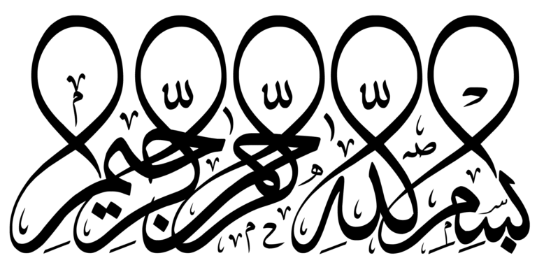

سَأَلَ سَآئِلُۢ بِعَذَابٖ وَاقِعٖ (1) لِّلۡكَٰفِرِينَ لَيۡسَ لَهُۥ دَافِعٞ (2) مِّنَ ٱللَّهِ ذِي ٱلۡمَعَارِجِ (3) تَعۡرُجُ ٱلۡمَلَٰٓئِكَةُ وَٱلرُّوحُ إِلَيۡهِ فِي يَوۡمٖ كَانَ مِقۡدَارُهُۥ خَمۡسِينَ أَلۡفَ سَنَةٖ (4) فَٱصۡبِرۡ صَبۡرٗا جَمِيلًا (5) إِنَّهُمۡ يَرَوۡنَهُۥ بَعِيدٗا (6) وَنَرَىٰهُ قَرِيبٗا (7) يَوۡمَ تَكُونُ ٱلسَّمَآءُ كَٱلۡمُهۡلِ (8) وَتَكُونُ ٱلۡجِبَالُ كَٱلۡعِهۡنِ (9) وَلَا يَسَۡٔلُ حَمِيمٌ حَمِيمٗا (10) يُبَصَّرُونَهُمۡۚ يَوَدُّ ٱلۡمُجۡرِمُ لَوۡ يَفۡتَدِي مِنۡ عَذَابِ يَوۡمِئِذِۢ بِبَنِيهِ (11) وَصَٰحِبَتِهِۦ وَأَخِيهِ (12) وَفَصِيلَتِهِ ٱلَّتِي تُٔۡوِيهِ (13) وَمَن فِي ٱلۡأَرۡضِ جَمِيعٗا ثُمَّ يُنجِيهِ (14) كَلَّآۖ إِنَّهَا لَظَىٰ (15) نَزَّاعَةٗ لِّلشَّوَىٰ (16) تَدۡعُواْ مَنۡ أَدۡبَرَ وَتَوَلَّىٰ (17) وَجَمَعَ فَأَوۡعَىٰٓ (18) ۞إِنَّ ٱلۡإِنسَٰنَ خُلِقَ هَلُوعًا (19) إِذَا مَسَّهُ ٱلشَّرُّ جَزُوعٗا (20) وَإِذَا مَسَّهُ ٱلۡخَيۡرُ مَنُوعًا (21) إِلَّا ٱلۡمُصَلِّينَ (22) ٱلَّذِينَ هُمۡ عَلَىٰ صَلَاتِهِمۡ دَآئِمُونَ (23) وَٱلَّذِينَ فِيٓ أَمۡوَٰلِهِمۡ حَقّٞ مَّعۡلُومٞ (24) لِّلسَّآئِلِ وَٱلۡمَحۡرُومِ (25) وَٱلَّذِينَ يُصَدِّقُونَ بِيَوۡمِ ٱلدِّينِ (26) وَٱلَّذِينَ هُم مِّنۡ عَذَابِ رَبِّهِم مُّشۡفِقُونَ (27) إِنَّ عَذَابَ رَبِّهِمۡ غَيۡرُ مَأۡمُونٖ (28) وَٱلَّذِينَ هُمۡ لِفُرُوجِهِمۡ حَٰفِظُونَ (29) إِلَّا عَلَىٰٓ أَزۡوَٰجِهِمۡ أَوۡ مَا مَلَكَتۡ أَيۡمَٰنُهُمۡ فَإِنَّهُمۡ غَيۡرُ مَلُومِينَ (30) فَمَنِ ٱبۡتَغَىٰ وَرَآءَ ذَٰلِكَ فَأُوْلَٰٓئِكَ هُمُ ٱلۡعَادُونَ (31) وَٱلَّذِينَ هُمۡ لِأَمَٰنَٰتِهِمۡ وَعَهۡدِهِمۡ رَٰعُونَ (32) وَٱلَّذِينَ هُم بِشَهَٰدَٰتِهِمۡ قَآئِمُونَ (33) وَٱلَّذِينَ هُمۡ عَلَىٰ صَلَاتِهِمۡ يُحَافِظُونَ (34) أُوْلَٰٓئِكَ فِي جَنَّٰتٖ مُّكۡرَمُونَ (35) فَمَالِ ٱلَّذِينَ كَفَرُواْ قِبَلَكَ مُهۡطِعِينَ (36) عَنِ ٱلۡيَمِينِ وَعَنِ ٱلشِّمَالِ عِزِينَ (37) أَيَطۡمَعُ كُلُّ ٱمۡرِيٕٖ مِّنۡهُمۡ أَن يُدۡخَلَ جَنَّةَ نَعِيمٖ (38) كَلَّآۖ إِنَّا خَلَقۡنَٰهُم مِّمَّا يَعۡلَمُونَ (39) فَلَآ أُقۡسِمُ بِرَبِّ ٱلۡمَشَٰرِقِ وَٱلۡمَغَٰرِبِ إِنَّا لَقَٰدِرُونَ (40) عَلَىٰٓ أَن نُّبَدِّلَ خَيۡرٗا مِّنۡهُمۡ وَمَا نَحۡنُ بِمَسۡبُوقِينَ (41) فَذَرۡهُمۡ يَخُوضُواْ وَيَلۡعَبُواْ حَتَّىٰ يُلَٰقُواْ يَوۡمَهُمُ ٱلَّذِي يُوعَدُونَ (42) يَوۡمَ يَخۡرُجُونَ مِنَ ٱلۡأَجۡدَاثِ سِرَاعٗا كَأَنَّهُمۡ إِلَىٰ نُصُبٖ يُوفِضُونَ (43) خَٰشِعَةً أَبۡصَٰرُهُمۡ تَرۡهَقُهُمۡ ذِلَّةٞۚ ذَٰلِكَ ٱلۡيَوۡمُ ٱلَّذِي كَانُواْ يُوعَدُونَ (44)